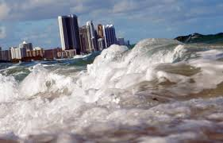
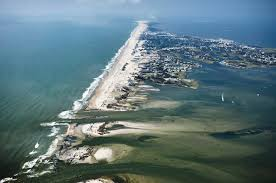
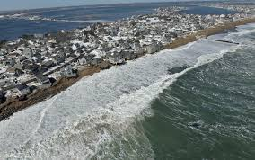

Rising Sea Levels
In general, Ocean water expands as the temperature increases and fills up more volume. Our oceans absorb an average of
90% of the heat that greenhouse gases capture in the earth’s atmosphere. This makes thermal expansion a large contributor
to the global sea-level rise. In addition to this, sea levels rise by about 0.13 inches every year.



Factors causing the sea levels to rise:
- Thermal expansion: This is when water expands as the seas temperature rises. On average, almost half of the sea-level has risen over the past
25 years. This rise in water is attributable to warmer oceans occupying more volumes of space.
- Melting glaciers: Various large areas/clumps of ice like Mountain Glaciers melt a little bit, naturally every summer.
In winter, snow which is mainly formed from evaporated seawater are mostly useful to balance out the melting from summer.
However, recently, persistently higher temperatures caused by global warming have resulted in greater melting in the summer (amounts above average).
These high temperatures have also led to decreasing snowfall due to earlier springs and late winters.
- Loss of Greenlands and Antarctica’s ice sheets: Relating to Mountain Glaciers, these high temperatures are also influencing
Greenland's and Antarctica’s ice sheets to melt at a much faster rate. Scientists also consider believing that
meltwater from above and seawater from below are leaking underneath Greenland's ice sheets, which causes effective
oils to enters oceans relatively quickly.
Effects of sea levels rising:
- With the continuous amounts of sea levels rising, the smallest amounts of water rising can influence major effects on the coastal habitats more inland.
The major things this rising could cause are destructive erosion, Wetland flooding, aquifer & agriculture soil contamination with salt, and loss of
habitats for fish, birds, and plants.
- These risen sea levels are coinciding with highly dangerous hurricanes and typhoons that move at a slower rate and have higher
precipitation levels. Which contributes to highly powerful storms that can take away anything in their path.
- Flooding continuing in low-lying areas force the citizens to migrate to higher ground. Plus, millions of people are vulnerable
from this flooding risk and various other climate change effects. The prospect of higher coastal water levels threaten the basic services
like internet access due to most of the underlying communications infrastructure remaining in the way of rising seas.
Destructive Erosion:
Erosion is known as the geological effect when earthen materials are transported by natural forces known as wind or water.
A similar process to this is weathering which simply breaks down or dissolves rocks. However, this process doesn’t involve transporting/moment.
Most erosion is performed by liquid water, wind, or ice.
In addition, two ways that will tell you if erosion is taking place is by noticing if the wind is dusty or if the water or glacial ice are muddy.
The brown colour in these ways indicate that small portions of rocks and minerals are being suspended in the fluid and are being transported to another place.
This material transported is known as sediment.
Different types of erosion:
- Physical erosion: Describes the process of rocks changing their physical properties without changing their original chemical composition
- Water erosion: When rain, rivers, floods, lakes, and oceans carry away small amounts of soil & sand and slowly wash away the sediment
- Valley erosion: Rushing streams and rivers wearing away their banks and causing larger valleys to take form
- Coastal erosion: Wearing away rocks or sand on the beach which can change the entire coastlines
- Wind erosion: Aeolian processes which are continuously transporting dust and sand from multiple different places
- Ice erosion: Large glaciers eroding in an area over long periods of time with the help of gravity
Wetland flooding and habitat loss:
A Wetland is an area where the land is covered by water. They could either be freshwater or saltwater.
It's a concern about these wetlands flooding due to them being the best-known habitats which are also the most productive ecosystems.
In addition to this, they support a fairly large amount of organisms such as birds & fish and if these wetlands were to disappear most
cities would have to spend more money to treat the water for their citizens. Plus, floods are concidered a huge issues for many citizens in general.
Aquifer and agriculture soil contamination with salt:
Salinization is the increase in the total amount of dissolved solids of the aquifers caused by natural or anthropogenic factors.
In addition, by having chemical compositions of natural water resources start in degrading quality of the water supply to the
domestic & agriculture selectors, contributes to the loss of biodiversity, loss of fertile soil, destroys fishery industries, alters
the local climate, and creates threatening health problems.
The NASA Climate Change page on links includes more information about rising sea levels.
The National Geographic page on links includes more information about sea levels in general.
Return to the top of the page.